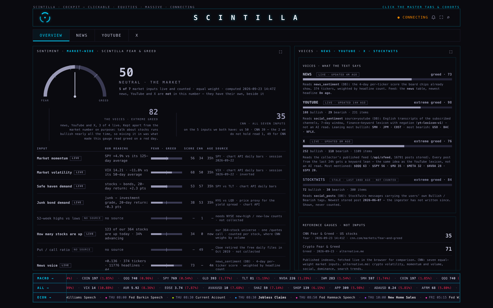
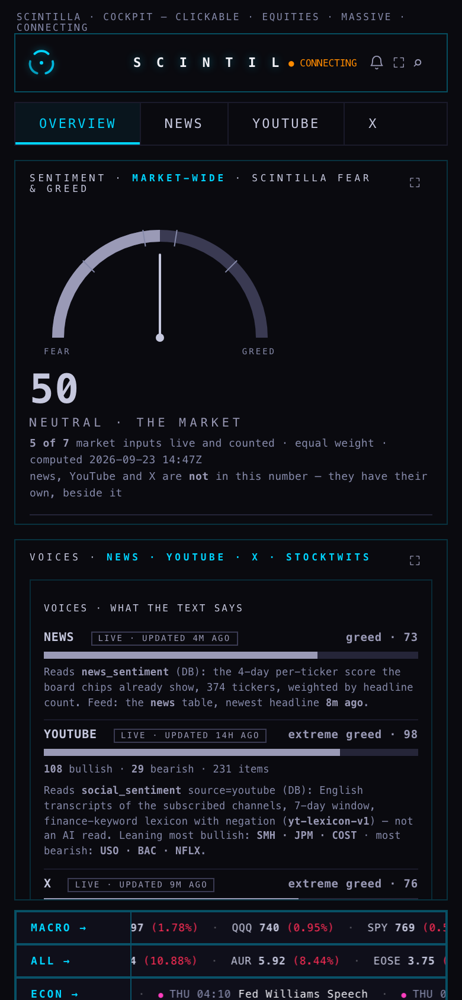
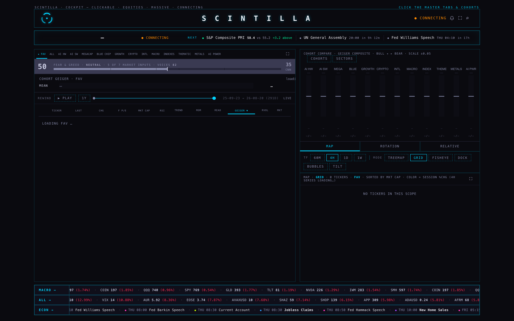
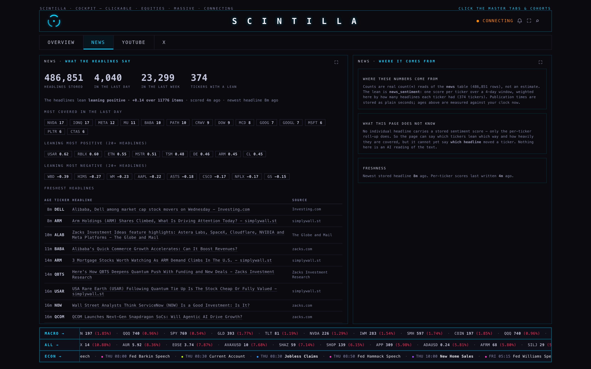
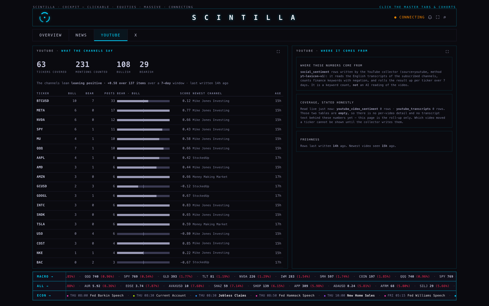
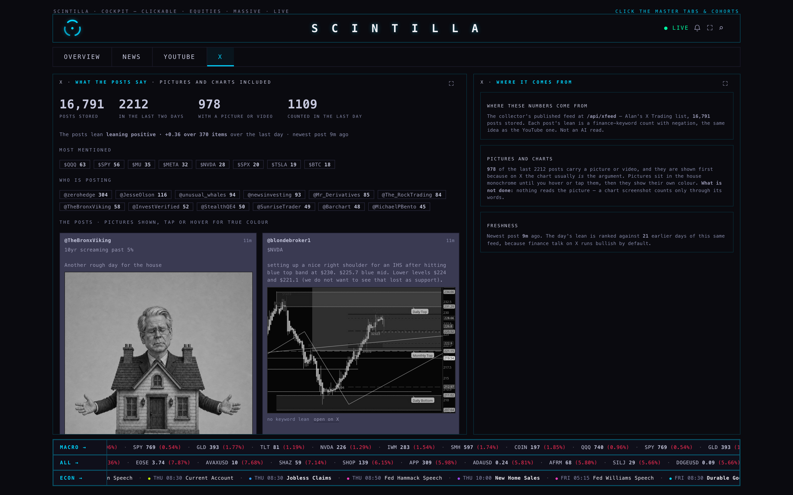

23 September 2026 · branch lane2/sentiment-20260923 · built and checked on the MacBook · nothing deployed, nothing pushed to production
This is the answer to three things you asked for: the research first, then a page for each voice, then one master tab with a single fear & greed gauge — and the explanation of why our gauge said 68 GREED on a night CNN said 35 FEAR.
Our gauge was measuring two different things at once and calling the answer one number. Four market readings were averaged together with the news, YouTube and X feeds. Talk about stocks is cheerful nearly all the time, so three happy feeds lifted the headline into greed on a day the market was falling. CNN's number measures the market only. Now ours does too — the voices keep their own number beside it, named as what they are.
Checked live at 14:47Z today, with the market open: our market gauge 50, the voices 82, CNN 35. Every one of those numbers is on the screenshot below, and each input says where it came from and how old it is.
StockTwits does not read anybody's writing to decide the mood. The person posting tags their own message Bullish or Bearish with a toggle on the message box. Only about a fifth to a quarter of posts carry a tag, and far more of them say bullish than bearish. Their published Sentiment score is not a simple count of those tags either: it mixes the tags with likes, replies and how much a ticker is being talked about at all, and it leans on recent activity rather than a long average. It uses no price data and no brokerage data — it is purely what the room is saying and how loudly.
Two things worth stealing, one thing to avoid. Worth stealing: an explicit bull/bear mark per item rather than a guess from the words, and treating how much a ticker is being discussed as its own signal separate from direction. Worth avoiding: depending on their pipe. Their public developer registrations are paused and data access is a request-based enterprise arrangement. Our own stored StockTwits rows prove the risk — the newest one is 7 June 2026, 108 days old. It is shown on the page and never counted.
Recommendation for StockTwits: do not build on it. Keep the stale rows visible and labelled as dead, and copy the mechanic instead: our X and YouTube feeds already give both halves — a direction per item and a volume of talk per ticker.
Today neither our YouTube nor our X lean is an AI reading. Both are keyword counts with negation — a list of bullish and bearish words, where a "not" in front flips the word. It is honest and cheap and it is also blunt: it cannot tell "this drop is a gift" from "this is a gift that dropped".
| Tool | What it is | How good | What it costs to run |
|---|---|---|---|
| FinBERT (ProsusAI) | A BERT-base model, 12 layers, 110 million settings, fine-tuned on finance text. Free weights, downloaded and run on our own machine. | The most quoted benchmark on the standard finance sentence set is around 0.97 accuracy after fine-tuning. It is the default in most published finance pipelines. | No per-call fee — only machine time. Roughly 50 ms a document on a small GPU; several times slower on plain CPU. Our whole 486,825-headline backlog is a one-off job; the ~4,000 headlines a day that arrive now are nothing. |
| FinGPT | An open framework that fine-tunes general open LLMs on finance data with LoRA adapters. | Competitive and more flexible than FinBERT; considerably heavier to serve and to keep current. | Machine time, GPU strongly preferred. More moving parts to maintain. |
| A paid frontier model (GPT-4o class) | Send the headline to somebody else's API and read the answer. | Reported to beat FinBERT by up to about 10% depending on sector. | A fee per headline, and our text leaves the building. At 4,000 headlines a day that is a real recurring bill for a number we can get locally. |
| Distilled small models (TinyBERT-style) | A smaller student model trained from a bigger one. | A little below FinBERT. | Cheapest; runs comfortably on CPU. |
Recommendation for reading text: FinBERT, run on our own machine, scoring each headline and writing the score next to the headline — not a per-ticker roll-up. Keep the keyword count as the labelled fallback, never mix the two in one number, and always say on screen which one produced the figure. Nothing about this needs a paid API.
Seven inputs, equal weight, market only: market momentum, stock price strength (52-week highs against lows), stock price breadth (advancing against declining volume), put/call options, junk bond demand, market volatility, safe haven demand. The scoring is the part that matters and the part we had wrong: CNN measures how far each input sits from its own average, in units of how much that input normally moves — not where it ranks against its own history.
I read CNN's live component scores at 14:41Z today, and they explain their 35 exactly: momentum 34, volatility 50, safe haven 57, junk bonds 53, put/call 49, breadth 0, 52-week highs vs lows 1. Those last two are at the floor. Average the seven and you get 34.9 — their published 35.4.
No. I read their widget catalogue. The official embeddable set is: Advanced Chart, Symbol Overview, Mini Chart, Seasonal Chart, Market Summary, Market Overview, Market Data, World Market Summary, Ticker Tape, Ticker Tag, Single Ticker, Tickers, Stock Heatmap, Crypto Coins Heatmap, Forex Table, ETF Heatmap, Screener, Cryptocurrency Market, Symbol Info, Technical Analysis, Fundamental Data, Company Profile, Top Stories, Economic Calendar, Broker Rating, Broker Reviews, Economic Map. There is no fear & greed widget among them. The fear & greed things you see on TradingView are community Pine scripts on a chart — they live inside their chart, they are one author's recipe, and they are not embeddable on our site.
Recommendation for the gauge: keep ours, because it is the only one we can explain input by input. Beside it, keep reading CNN's published number live for comparison — that already works from the browser and is on the page now, marked a reference and never an input. If you want a TradingView dial on the page it would have to be their Technical Analysis gauge, which is a buy/sell rating, not fear and greed, and I would not put it next to this without a very clear name.
Three separate faults, all now fixed or named:
What is left after those three fixes is an honest difference, and the page prints it in words: on the five inputs we both hold, we read 50 and CNN reads 39; the two we do not hold read 1 and 49 for them. Some of that gap is real method difference — CNN weighs breadth by volume, we count stocks, and the row says so. I did not tune our number to match theirs, because a number tuned to match another number is not a measurement.
A fourth fault turned up while I was testing, and it was the same disease: with the chart API unreachable the page still printed 82 EXTREME GREED from three social feeds alone. It will not do that now — a market reading needs at least three live market inputs, or the page says it has no market reading and shows the voices only.





